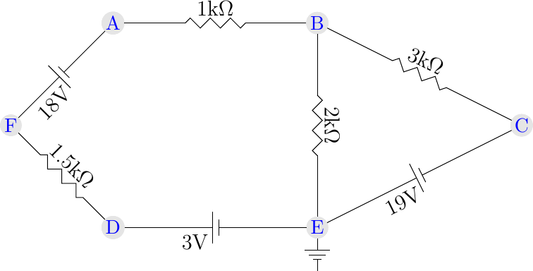
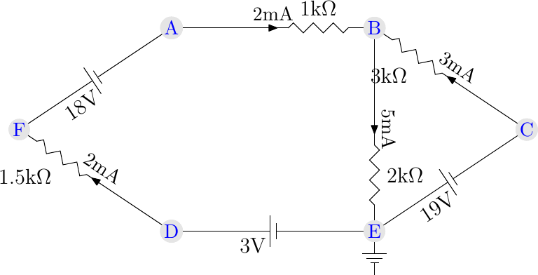
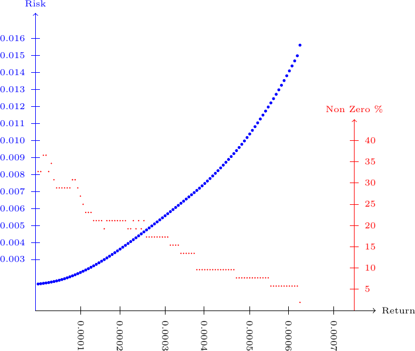
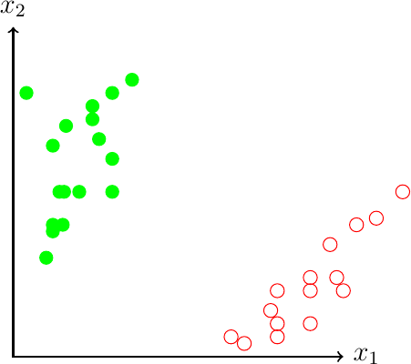
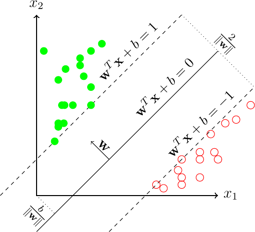
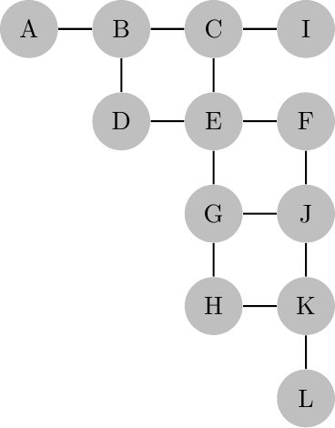

\(\newcommand{\R}{{\mathbb{R}}}\) \(\newcommand{\Z}{{\mathbb{Z}}}\) \(\newcommand{\N}{{\mathbb{N}}}\) \(\newcommand{\var}[1]{{\color{red}{\mathbf{#1}}}}\) \(\newcommand{\param}[1]{{\color{blue}{#1}}}\) \(\newcommand{\mathsc}[1]{{\normalfont\textsc{#1}}}\) \(\def\sc#1{\dosc#1\csod}\) \(\def\dosc#1#2\csod{{\rm{#1{\rm\small #2}}}}\) \(\newcommand{\set}[1]{{\sc#1}}\) \(\newcommand{\mathvar}[1]{\var{#1}}\) \(\newcommand{\half}{{\small{\frac{1}{2}}}}\)
24. Quadratic Optimization Models¶
The step from linear models to quadratic ones can be a giant step. This is not because we are abandoning the linear world and enter the non linear one. Or, at least, it depends. The really difficult border to cross is not the one of non linearity, but another one: the border between convex and non convex optimization problems. We do not wish to go into details here on this theoretical and algorithmic aspect. Just we would like to remind that a convex set ia any set \(S \subseteq \R^n\) such that
This means that whichever two points are chosen in a convex set, the segment with these two points as extremes is all contained in the same set.
A convex function over a convex set is any function such that:
A convex optimization problem is any problem of the form
where \(S\) is a convex set and \(f()\) is a convex function defined on a convex set which contains \(S\). Convex optimization is often (although not always) computationally tractable, in the sense that there exist polynomial complexity algorithms for a very large set of convex problems. Almost always, on the contrary, if either the objective function or the feasible set is non convex, the optimization problem becomes intractable (e.g., we do not know any algorithm whose complexity is better than exponential), or even unsolvable (in the sense that there cannot exist any finite procedure guaranteed to find a global optimum, or even an approximation of it).
Sorry for the imprecision of the above concepts! But we do not wish to enter this very deep subject in a book on modeling. What makes convex optimization so special is the fact that these problems enjoy several very important properties which are not enjoyed by most of the other problems. First, any feasible solution which is a local optimum is also a global optimum (please refer to any textbook on analysis or optimization for precise definitions). Moreover there exist many optimality conditions which, in general, are just necessary and which, in convex problems, become sufficient.
As a simple example: linear optimization is an example of a convex optimization problem. And, in fact, there exist excellent algorithms to solve even large scale problems. By the way: the simplex algorithm, which we invariably used in this volume and which is the top used method for this class of problems, has an exponential worst case complexity! But the reader should not worry too much: this method is excellent in practice - the theoretical worse cases which proof the complexity of the simplex method simply do not appear in real life situations. And, as a simple example of a problem which is not a convex one, linear integer optimization is one we encountered in this book. And we know it is a difficult one. In this case, non convexity is in the feasible set: being discrete, it cannot be convex, unless it is empty or it reduces to a singleton.
In this part we will only give a tiny set of examples, without any desire even to approximately describe the possibilities opened by the apparently small change in the model, in which the objective function, instead of being a polynomial of degree one, becomes a polynomial of degree 2. We will thus give a tiny set of practical cases in which we might be interested in solving a problem of the form
where \(Q \in \R^{n \times n}\) is a symmetric matrix. The above problem might be generalized to include also quadratic constraints or integer variables. We would like to point out, again, that the simplicity of this formulation should not be confused with its complexity. As a simple matter of thought, consider the fact that any linear optimization problem in binary variables can be equivalently written as a quadratically constrained problem:
or, choosing a large enough penalty parameter \(\lambda\), as the quadratic optimization problem
and this should be enough to convince the reader of the (possible) high complexity of quadratic optimization.
Of course some sub-classes of quadratic optimization models are indeed easy to solve and lend themselves to solution strategies which are not very dissimilar, in their basic ideas, implementation and computational complexity, from those of linear optimization. The widest class of “easy” quadratic optimization problems is that characterized by a convex objective function. This is the case when matrix \(Q\) is positive-semidefinite, which means that
or, equivalently, when all the eigenvalues of the matrix, besides being real (as a consequence of symmetry) are also non negative. Even better is the case in which the matrix is positive definite:
or when its eigenvalues are all strictly positive. Our first examples fall within this framework.
24.1. Solving linear electrical networks¶
We do not wish to go too much into details on the theory and practice of electrical circuits. We refer the readers to the vast literature on the subject; the literature is rich not only of first principles, but also of computational methods oriented towards a solution “by hand” of small networks. Here we take a different approach, which is very well introduced in the classical Dennis59. Assume we are given a graph, composed of nodes and arcs. Every arc is associated with a linear electric component. We assume here, only for simplicity, that two types of elements might be present.

In the example we have a tiny electrical network with two types of components: voltage generators, which keep a fixed difference of potential at their extremes, and resistors, which are characterized by a fixed flow of current, linked to a voltage drop by Ohm’s law. We might easily add other linear components, like diodes, inductances, but we wish to keep the example as simple as possible. The above network can be represented as a graph whose arcs are of different types, depending on the component associated to them. The following data file represents the circuit above:
set NODES := A B C D E F;
set RESISTORS :=
(A, B)
(B, E)
(C, B)
(D, F)
;
set GENERATORS :=
(F,A) (D,E) (E,C);
param R :=
A B 1
B E 2
C B 3
D F 1.5
;
param V:=
F A 18
D E 3
E C 19
;
param Ground := E;
In order to find voltages and currents in equilibrium conditions, an energy minimization problem can be solved. In fact the flow of current at steady state is such as to minimizes the total energy. In circuits like the one above, it can be shown that, from Ohm’s law, the energy of the circuit can be expressed as a linear combination of the squares of the voltages across resistors, with coefficients equal to the conductance of each resistor, which corresponds to the inverse of the resistance. Voltages in the circuit are easily computed, depending on the electric element associated to each arc. In general, denoting by \(\var{v}_{ij}\) the tension (voltage) along an arc \((i,j)\) and by \(\var{u}_i\) the potential of a node, the relevant equations are:
for an arc containing a voltage generator, and
for an arc associated to a resistor. The energy is obtained as
where \(\param{R}_{ij}\) is the resistance on arc \((i,j)\). The model below implements this energy optimization problem:
set NODES;
set RESISTORS within NODES cross NODES;
set GENERATORS within NODES cross NODES;
param R{RESISTORS} default 0;
param V{GENERATORS} default 0;
param Ground symbolic within NODES;
set ARCS := RESISTORS union GENERATORS;
var v{ARCS};
var u{NODES};
minimize Energy: 0.5 * sum{(i,j) in RESISTORS} (v[i,j] * v[i,j] / R[i,j]) ;
s.t. BalanceR{(i,j) in RESISTORS}:
u[j] - u[i] = v[i,j];
s.t. BalanceG{(i,j) in GENERATORS}:
u[j] - u[i] = V[i,j];
s.t. FixGround:
u[Ground] = 0;
This problem can be solved through those solvers which accept quadratic (convex) optimization problems.
We do not wish to go into further details, but it can be seen that this problem has a lagrange dual whose main variables are current intensities. The optimal value of dual variables can be displayed, in AMPL, as the language automatically associates to each constraint a dual variable with the same name. So we can find voltages and currents in the optimal solutions to the above model:
For the simple circuit used here as an example, we obtain the solution:
u [*] :=
A 12
B 10
C 19
D -3
E 0
F -6
;
v :=
A B -2
B E -10
C B -9
D E 0
D F -3
E C 0
F A 0
;
BalanceR :=
A B 2
B E 5
C B 3
D F 2
;
which can be represented as

24.2. Elementary portfolio optimization¶
Another important quadratic (convex) set of models is related to financial optimization. The model presented here is inspired by that analyzed by Markowitz in 1952 and which eventually led him to win the Nobel prize for Economy in 1990. The model is described in many papers and books by Markowitz himself, see, e.g., an historical account in Markowitz99. Only in 1999, however, Markowitz realized that the same model had indeed been already discovered by the Italian probabilist Bruno De Finetti. Markowitz admitted in 2006 that the origin of the model were to be trqaced back to De Finetti, see Markowitz06, although he had re-discovered it independently.
The basic of portfolio theory might be given as follows. Assume we have a finite set of \(n\) available risky assets: \(\{S_1, S_2, \ldots, S_n\}\). Each asset has an associated return \(R_i\), which is, of course, random; it is also assumed that different assets have returns which cannot be modeled as independent and, on the contrary, are typically correlated one to the other, either positively or negatively. It is assumed that, for each asset, the expected return \(\param{\mu}_i = E(R)_i\) is either known or (reliably) estimated. It is also assumed that, for each pair of assets, the covariance of their returns is available (or estimated): \(\param{Q}_{ij}=\textrm{Cov}(S_i,S_j)\). Often, in order to obtain an estimate of these parameters, an historical set of observations of actual returns is used. Assume that for a time period \(t=1,2,\ldots,T\) the actual return of an asset has been observed: \(r_{it}\). Then we can use the estimates:
Whichever the method used to estimate averages and covariances, assume that a fixed amount of money, conventionally assumed to be one unit, needs to be invested. We denote by \(\var{x}_i\) the fraction of the total investment devoted to asset \(i\). The constraint of optimal portfolio models include the following ones:
where the sign constraints means that no “short selling” is allowed. Given these variables, the expected return of the portfolio, thanks to the linearity of the expectation operator, is easily computed as
A frequently used measure of the risk of an investment is the standard deviation of the return, although several alternative risk measures are now in current use. It can be proven that the variance of a portfolio, given the covariance matrix \(Q\) is given by
From the above formulae, three main models can be derived in the context of mean-variance portfolio thoery:
Each of the three models above require some parameter to be specified or, better, to be varied in order to generate a set of efficient portfolios. In the first modelthe maximum expected return is sought among all portfolio whose risk, measured in terms of the variance, is below a threshold \(\param{\sigma}^2\); in the second model a minimum risk portfolio is required, so that the expected return of the investment is bounded below by a threshold \(r\). In the third model a compromise is sought between risk and return, through the multipliers \(\param{\lambda}\). In the author’s opinion, the third model is weaker, as it has it is less interpretable by a user and mixes quantities which are not comparable one to the other. In fact, a more correct version of the model would need to use the standard deviation of the portfolio return, in place of the variance, thus summing two quantities (return and standard deviation) which have the same unit of measurement. However, the square root operator needed to obtain the standard deviation would cause the model to become numerically much more complex. In fact all of the three models above are convex quadratic optimization (or quadratically constrained linear optimization) problems, very easily solvable with modern convex optimization algorithms.
In order to present an example of implementation of the model, we used a set of returns of a set of 52 financial assets observed over a period of more than 2500 days. The raw data used is contained in a file whose first rows are displayed here:
param T := 2519;
set ASSETS := AGG DBC DFE DIA DXJ EEM EFA EWG EWH EWI EWT EWU EWW EWY EWZ EZU FEZ FXI GDX GLD IAU IBB ITB IVV IWD IWM IYR KBE KRE LQD OIL SDS SH SLV SPY USO VGK VNQ VTI VWO XHB XLB XLE XLF XLI XLK XLP XLU XLV XLY XME XOP;
param Ret:
AGG DBC DFE DIA DXJ EEM EFA EWG EWH EWI EWT EWU EWW EWY EWZ EZU FEZ FXI GDX GLD IAU IBB ITB IVV IWD IWM IYR KBE KRE LQD OIL SDS SH SLV SPY USO VGK VNQ VTI VWO XHB XLB XLE XLF XLI XLK XLP XLU XLV XLY XME XOP:=
1 0.002 -0.026 -0.001 0.002 0.012 -0.014 -0.003 -0.003 -0.011 -0.002 0.003 -0.002 -0.009 -0.011 -0.013 -0.004 -0.001 -0.035 -0.018 -0.010 -0.008 0.015 -0.009 0.003 -0.002 0.003 0.000 0.000 0.003 0.008 -0.041 -0.004 -0.002 0.002 0.002 -0.042 -0.002 0.001 0.002 -0.011 -0.005 -0.005 -0.018 -0.003 -0.004 0.015 0.002 -0.001 0.011 0.000 -0.005 -0.013
2 -0.001 0.001 -0.009 -0.008 -0.021 -0.029 -0.015 -0.017 -0.008 -0.013 -0.025 -0.019 -0.023 -0.024 -0.035 -0.012 -0.017 -0.057 -0.014 -0.024 -0.026 0.000 -0.010 -0.008 -0.008 -0.021 -0.015 -0.010 -0.021 -0.001 0.007 0.015 0.006 -0.032 -0.008 0.010 -0.013 -0.019 -0.008 -0.028 -0.009 -0.007 0.007 -0.008 -0.003 -0.008 -0.007 -0.018 -0.006 -0.007 -0.009 0.009
3 0.001 0.001 0.004 0.003 0.001 0.007 0.001 -0.003 0.025 0.001 -0.003 0.004 0.007 0.002 0.014 0.002 0.001 0.029 0.002 0.005 0.005 0.001 -0.021 0.004 0.003 -0.004 0.000 0.003 0.000 0.000 -0.001 -0.005 -0.002 0.003 0.005 -0.007 -0.003 0.001 0.004 0.011 -0.014 0.000 0.000 0.005 0.004 0.003 0.002 -0.001 0.001 0.002 0.010 0.004
4 0.000 -0.009 0.000 -0.001 0.007 -0.022 0.001 0.005 -0.002 -0.001 -0.010 -0.006 -0.027 -0.011 -0.025 -0.002 -0.002 -0.044 -0.007 0.006 0.007 -0.001 0.002 -0.001 -0.003 0.009 0.012 -0.002 -0.004 0.000 -0.006 0.001 0.000 0.016 -0.001 -0.004 -0.004 0.013 0.000 -0.024 0.006 0.000 -0.009 -0.002 -0.001 0.001 0.002 0.001 -0.001 0.005 -0.011 -0.010
5 -0.001 -0.015 -0.006 0.003 -0.018 -0.002 -0.008 -0.011 -0.009 -0.011 -0.002 -0.003 0.010 -0.003 0.007 -0.008 -0.011 -0.020 -0.012 -0.004 -0.003 0.004 0.001 0.003 0.001 0.008 0.016 0.001 0.000 -0.001 -0.042 -0.004 -0.001 -0.004 0.003 -0.043 -0.005 0.013 0.002 -0.003 0.003 0.007 -0.019 0.003 0.003 0.005 0.004 0.000 0.002 0.005 0.012 -0.019
6 -0.002 -0.001 0.000 0.005 -0.002 0.013 0.006 0.009 0.002 0.006 -0.002 0.014 0.012 0.008 0.009 0.007 0.011 0.008 0.009 0.001 0.002 0.011 0.014 0.005 0.003 0.006 0.011 0.001 0.008 -0.003 -0.022 -0.013 -0.006 -0.006 0.004 -0.021 0.015 0.013 0.008 0.013 0.016 0.011 -0.006 0.006 0.008 0.010 0.008 0.001 0.011 0.011 0.009 -0.005
7 -0.001 0.023 0.011 0.005 0.012 0.020 0.011 0.011 0.010 0.011 0.022 0.009 0.005 0.022 0.019 0.010 0.007 0.023 0.026 0.025 0.023 0.015 0.006 0.008 0.008 0.010 0.003 0.001 0.001 -0.001 0.008 -0.010 -0.005 0.040 0.008 0.007 0.006 0.003 0.007 0.014 0.006 0.011 0.026 0.001 0.003 0.003 -0.002 -0.008 0.005 0.003 0.022 0.033
8 0.002 -0.023 0.003 0.000 0.001 0.004 -0.001 0.006 0.012 -0.001 -0.003 0.000 0.005 0.003 -0.012 -0.003 -0.003 0.019 -0.010 -0.003 0.000 0.000 -0.004 -0.002 -0.002 -0.007 0.011 0.000 -0.009 0.001 -0.028 0.002 0.001 -0.019 -0.002 -0.028 0.003 0.014 -0.002 0.001 -0.003 0.003 -0.010 0.003 0.005 -0.002 0.001 0.003 0.002 0.004 -0.017 -0.010
9 -0.001 0.009 0.003 0.000 -0.002 -0.004 0.001 -0.006 0.007 -0.006 0.006 0.000 0.002 -0.008 0.001 -0.003 -0.006 -0.011 0.005 0.011 0.010 0.003 0.017 0.000 0.001 -0.004 0.003 -0.001 -0.007 -0.001 0.018 0.001 0.001 0.016 0.000 0.019 -0.004 0.000 0.001 -0.003 0.009 0.003 0.011 -0.003 0.001 -0.013 0.003 0.002 0.006 0.000 0.008 0.011
10 0.001 -0.011 0.001 -0.002 -0.001 -0.010 -0.003 -0.006 -0.002 -0.002 -0.006 -0.002 -0.017 -0.006 -0.006 -0.003 -0.003 -0.014 -0.019 -0.006 -0.010 -0.009 0.000 -0.003 -0.002 -0.008 -0.003 0.003 -0.008 0.003 -0.025 0.007 0.004 -0.011 -0.003 -0.022 -0.001 -0.001 -0.005 -0.005 0.005 -0.006 -0.007 -0.004 -0.004 -0.011 -0.002 -0.001 0.003 0.006 -0.018 -0.010
11 0.000 0.015 0.007 0.000 0.010 0.018 0.012 0.014 0.018 0.014 0.004 0.011 0.013 0.003 0.024 0.014 0.012 0.015 0.015 0.012 0.014 0.004 0.014 0.003 0.005 0.004 0.009 0.001 0.001 -0.001 0.033 -0.005 -0.002 0.016 0.002 0.028 0.011 0.010 0.004 0.019 0.013 0.015 0.027 0.003 -0.001 0.000 0.002 0.000 0.000 0.000 0.027 0.030
12 0.001 0.001 -0.001 -0.006 -0.006 -0.001 -0.005 -0.011 0.006 -0.004 -0.011 -0.005 0.001 -0.010 0.003 -0.008 -0.010 0.006 -0.007 -0.004 -0.005 -0.004 -0.007 -0.004 -0.003 -0.007 -0.003 -0.001 -0.005 0.001 -0.014 0.009 0.005 0.005 -0.003 -0.013 -0.005 -0.008 -0.004 -0.001 -0.007 -0.010 -0.007 -0.001 -0.011 -0.007 -0.001 0.000 -0.006 -0.006 -0.007 -0.002
13 -0.002 0.032 0.002 0.005 0.009 0.023 0.009 0.007 0.007 0.008 0.015 0.008 0.019 0.012 0.027 0.008 0.008 0.018 0.049 0.024 0.024 -0.006 0.016 0.003 0.005 0.009 0.003 0.001 0.002 -0.003 0.041 -0.005 -0.002 0.030 0.003 0.041 0.006 0.005 0.003 0.017 0.017 0.013 0.026 -0.001 0.012 0.000 0.002 0.006 -0.005 0.004 0.035 0.029
14 0.000 -0.008 0.003 0.006 0.014 0.009 0.006 0.006 -0.008 0.007 0.021 0.006 0.018 0.022 0.008 0.005 0.007 0.015 0.012 0.002 0.002 0.008 0.012 0.007 0.007 0.011 0.014 0.003 0.008 0.000 0.008 -0.015 -0.008 -0.004 0.008 0.010 0.008 0.013 0.009 0.009 0.011 0.010 0.004 0.010 -0.003 0.018 0.004 0.003 0.008 0.004 0.013 0.004
15 -0.001 -0.009 -0.011 -0.009 -0.020 -0.031 -0.016 -0.011 -0.035 -0.013 -0.032 -0.015 -0.031 -0.026 -0.020 -0.014 -0.014 -0.053 -0.011 -0.004 -0.005 -0.017 -0.034 -0.011 -0.012 -0.013 0.006 -0.006 -0.013 -0.003 -0.017 0.022 0.011 0.004 -0.012 -0.018 -0.016 0.006 -0.011 -0.031 -0.024 -0.003 -0.021 -0.014 -0.005 -0.012 -0.006 -0.001 -0.003 -0.016 -0.004 -0.021
From these data we generated estimates for the expected return and variance/covariance matrix:
set ASSETS := AGG DBC DFE DIA DXJ EEM EFA EWG EWH EWI EWT EWU EWW EWY EWZ EZU FEZ FXI GDX GLD IAU IBB ITB IVV IWD IWM IYR KBE KRE LQD OIL SDS SH SLV SPY USO VGK VNQ VTI VWO XHB XLB XLE XLF XLI XLK XLP XLU XLV XLY XME XOP;
#data generated by ampl returns.run on file returns.dat
param r :=
AGG 2.3422e-05 EWY 0.000278682 IYR 0.000203652 VWO 0.000138547
DBC -8.29694e-05 EWZ 0.000190552 KBE 0.000194125 XHB 0.000219532
DFE 3.93013e-05 EZU 1.58793e-06 KRE 0.00026836 XLB 0.000290195
DIA 0.000233426 FEZ -2.50099e-05 LQD 5.31957e-05 XLE 0.000295355
DXJ 6.9869e-05 FXI 0.000272727 OIL -0.000439857 XLF 7.82056e-05
EEM 0.000182612 GDX 0.00016316 SDS -0.000736403 XLI 0.000341802
EFA 2.97737e-05 GLD 0.000307265 SH 2.77888e-06 XLK 0.000369591
EWG 0.000152044 IAU 0.000309647 SLV 0.000315204 XLP 0.000296943
EWH 0.000259627 IBB 0.000622072 SPY 0.000274712 XLU 0.000160778
EWI 0.000188567 ITB 0.000144105 USO -0.000342596 XLV 0.000350536
EWT 0.000583168 IVV 0.000256451 VGK 5.95474e-06 XLY 0.000412068
EWU -2.54069e-05 IWD 0.000213974 VNQ 0.000278682 XME 0.000234617
EWW 0.00011314 IWM 0.000361254 VTI 0.000290592 XOP 0.000377134
;
param Q [*,*]
: AGG DBC DFE DIA DXJ :=
AGG 1.14607e-05 -1.99647e-06 -3.58687e-06 -5.04914e-06 -3.56813e-06
DBC -1.99647e-06 0.000167994 9.52069e-05 6.573e-05 7.31499e-05
DFE -3.58687e-06 9.52069e-05 0.000240979 0.000136476 0.000138092
DIA -5.04914e-06 6.573e-05 0.000136476 0.000150001 0.000127291
DXJ -3.56813e-06 7.31499e-05 0.000138092 0.000127291 0.000236857
EEM -7.96895e-06 0.000138258 0.000240632 0.000222521 0.000205307
EFA -4.06699e-06 0.000105163 0.000204987 0.000175019 0.000179657
EWG -5.99602e-06 0.000115348 0.000231467 0.000189938 0.000182988
and then we could run the optimization model:
set ASSETS;
param r{ASSETS};
param Q{ASSETS,ASSETS};
param rmin;
var x{ASSETS} >= 0;
minimize risk: sum{a1 in ASSETS, a2 in ASSETS} x[a1]*x[a2]*Q[a1,a2];
s.t. return:
sum {a in ASSETS} r[a]*x[a] >= rmin;
s.t. total:
sum{a in ASSETS} x[a] = 1;
This model requires a minimum expected return as a parameter. Instead of choosing a fixed return, we solved the problem with a required expected return between 0 and the maximum expected return of all assets, in small steps. The results, generated with the following command file:
model portfolio.mod
data portfolio.dat
option solver gurobi;
display min {a in ASSETS} r[a];
display max {a in ASSETS} r[a];
param maxR := max {a in ASSETS} r[a];
param Trials := 100;
param SmallThreshold := 0.001;
param OptRisk{1..Trials} default 0;
param OptRet{1..Trials} default 0;
param NotSmall{1..Trials} default 0;
for {i in 1..Trials} {
let rmin := i * maxR/Trials;
solve;
if solve_result = "solved" then {
let OptRisk[i] := sqrt(risk);
let OptRet[i] := rmin;
let NotSmall[i] := card({a in ASSETS: x[a] >= SmallThreshold});
};
};
display OptRisk, OptRet, NotSmall;
generated the following output:
min{a in ASSETS} r[a] = -0.000736403
max{a in ASSETS} r[a] = 0.000622072
: OptRisk OptRet NotSmall :=
1 0.00156315 6.22072e-06 17
2 0.00158083 1.24414e-05 17
3 0.00160206 1.86622e-05 19
4 0.00162451 2.48829e-05 19
5 0.00164919 3.11036e-05 17
6 0.00167792 3.73243e-05 18
7 0.00170841 4.3545e-05 16
8 0.00174298 4.97658e-05 15
9 0.00178248 5.59865e-05 15
10 0.00182635 6.22072e-05 15
11 0.00187457 6.84279e-05 15
12 0.0019272 7.46486e-05 15
13 0.00198372 8.08694e-05 15
14 0.0020435 8.70901e-05 16
15 0.00210609 9.33108e-05 16
16 0.00217189 9.95315e-05 15
17 0.0022405 0.000105752 14
18 0.00231223 0.000111973 13
19 0.0023869 0.000118194 12
20 0.00246468 0.000124414 12
21 0.00254733 0.000130635 12
22 0.00263158 0.000136856 11
23 0.00271818 0.000143077 11
24 0.0028106 0.000149297 11
25 0.00290396 0.000155518 11
26 0.00299889 0.000161739 10
In the output we can see the expected risk of the optimal portfolio (standard deviation of the portfolio), the expected return as well as the number of assets whose level, in the optimal solution, is sufficiently far from 0. The following picture represents the obtained results:

As it can be expected, higher expected returns are always associated with higher risk. In the picture we have also shown the number of assets in the optimal portfolios. It seems that higher return portfolios have a lower number of assets: this fact is actually related not to the return, but to the risk: the lower the number of assets in the portfolio, the higher, in general, is the risk. So it is reasonable to diversify. Diversification, as well as many other variants like, e.g., the requirement that if an asset is chosen, then its contribution to the total portfolio should be limited in a range (e.g., at least 5%, at most 20%), can be easily modeled through the introduction of binary variables and logical constraints:
It goes without saying that these additions make the model both non linear and binary (well, for the sake of precision, being binary is already a non linearity…). In general quadratic (even convex) optimization problems with binary variables are very hard to solve: to convince the reader, take into account the fact that a linear function is a special case of a convex quadratic one and, thus, quadratic integer optimization is at least as difficult than linear integer optimization. Nonetheless, in many cases, optimal solution can be found through advanced modern optimization solvers, if the structure of the problem allows that and the size is not too large. Modern, practical, portfolio optimization models differ, sometimes substantially, from the Nobel-prize winning one described here. As a minimum, they include transaction costs, a sort of fixed charge when investing on an asset, and predetermined lot sizes, e.g., multiple of 1000 euros. Moreover, the variance of the investment is no more considered as a practical and effective measure of the risk. Other measures are used, one of which is the semi-variance or downside risk defined as the expected value of the squared negative deviation from the expected return. In other words, any deviation of the actual return which is above the required expected one is considered as beneficial, while the model penalizes any deviation which causes the actual return to be below the threshold value. Other risk measures are the VaR, or Value at Risk and the CVaR, or Conditional Value at Risk. Their description is beyond the scope of this volume.
24.3. Support Vector Machines¶
There exists many methods for data analysis and prediction, most of which are nowadays widely used for classification or for regression tasks. Assume we are given a set of observations \(X_1, X_2, \ldots, X_N\), each of which composed of \(d\) features, i.e., \(X_i \in \R^d, \forall\,i\). Assume to each of these observation a label \(Y_i\) is associated. This label might be binary (typically: \(\pm 1\)), integer or generic real. We speak, respectively, of binary classification, multi-class classification, regression. We would like to build a model, i.e., a function, from the feature space to the label space which, in a sense to be made precise, best approximate the available data.
Many approaches exist, depending on the task and the quantity and quality of data. Among these, we recall decision trees, random forests, artificial neural networks, support vector machines. All of these are strictly related to optimization. In fact, choosing the “best” model for the available data is always an optimization problem whose aim is to select the best parameters to characterize one out of a large number of available function, according to a quality criterion to be optimized. We will briefly introduce here the concept of Support Vector Machines. Consider a dataset, an example of which is represented in the figure below:

In the example above we plot a dataset of observations, each of which consists of two features; the dataset is split into positive and negative examples (two classes), represented here by two different colors. As it can be easily seen, this dataset is linearly separable. Yhis means that there exists at leas an (hyper)plane
such that
or, concisely,
In case like the one above, if there exists a separating hyperplane, there usually exist an infinite number. The main idea of the Support Vector Machine (SVM) approach is to chose the one which maximizes the margin. Consider any point in the dataset and denote by \(H(w,b)\) the hyperplane \(w^T x + b = 0\). The distance of a point from the hyperplane can be found to be equal to
The margin of an hyperplane is defined as the distance from the hyperplane to the closest point in the dataset:
and the problem solved by the SVM approach is to find a separating hyperplane with maximum margin:
This apparently complex non linear problem can be proven to be equivalent to the following quadratic one:
and a geometrical representation of the maximum margin separating hyperplane is given in the figure:

There exists highly specialized software for the solution of the above problem, the most famous and widely used one is contained in the LibSVM library by Chih-Jen Lin Lin. We do not report here a numerical example for this convex quadratic problem with linear constraints, as the interest in problems like this one is mainly for cases in which large datasets are available. And we just note in passing that there are many important extensions to the basic model: we can account for outliers, we can solve the dual problem instead of the one reported here, we might extend the model to inlcude so called kernels which allow us to generate highly non linear separating hypersurfaces. We would like just to observe that all of these extensions do not make the model deviate from a quadratic one with linear constraints.
24.4. Quadratic Assignment¶
A very relevant, important and particularly hard to solve combinatorial model goes under the name of Quadratic Assignment and consist in an extension of the classical bi-partite assignment model with a quadratic objective function.
A possible example of application of this model is related to facility location. Assume, e.g. in planning the wards of a new hospital, that \(n\) location have been chosen and that \(n\) facilities (wards, in the example) need to be assigned, one for each location. This is thus a classical setting for the bi-partite assignment model: a binary variable \(\mathvar{\delta}_{ij}\) can be used to decide whether facility \(i\) is assigned to location \(j\) or not. In another application, locations might be places in a circuit and facilities are electric or electronic equipment to be placed in the available places. Once a decision has been taken, the cost associated to the decision depends on two parameters, both of which take into account the allocation of pairs of facilities: the distance between two different facilities, and the (expected) patient flow between the two facilities. In the circuit design example, these two parameters might be, again, the distance and the number of wires to be placed to connect the two components. The overall cost of an assignment is thus obtained as the sum of all costs associated to each pair of locations chosen for each facility. The idea is that, in the ward case, wards with a large flow of people should be placed as close as possible, while pairs of wards with relative low traffic might be located far from each other. So, in the model, we should consider pairs of facilities and pairs of possible location, and assign a cost which depends from one side on the distance between the two chosen locations, while from the other also on the flow between the two facilities. Let \(\param{Dist}\) be a matrix which represent the distance between two locations and \(\param{Flow}\) be another matrix representing flows between pairs of facilities, a quadratic model of this problem might be
A numerical example can be given for illustration, based on the following graph:

In the figure it is assumed that all edges have length one. The distance between any two locations in the graph is easily computed and can be traced back to Manhattan distance: nodes are considered as blocks in a city with perpendicular roads. Given these locations, and their pairwise distances, it is assumed that also the expected flows between any two pairs of facilities is given. The following datafile implements an example based on the above graph:
set LOCATIONS := A B C D E F G H I J K L;
set FACILITIES := 1 2 3 4 5 6 7 8 9 10 11 12;
param Dist
: A B C D E F G H I J K L :=
A 0 1 2 2 3 4 4 5 3 5 6 7
B 1 0 1 1 2 3 3 4 2 4 5 6
C 2 1 0 2 1 2 2 3 1 3 4 5
D 2 1 2 0 1 2 2 3 3 3 4 5
E 3 2 1 1 0 1 1 2 2 2 3 4
F 4 3 2 2 1 0 2 3 3 1 2 3
G 4 3 2 2 1 2 0 1 3 1 2 3
H 5 4 3 3 2 3 1 0 4 2 1 2
I 3 2 1 3 2 3 3 4 0 4 5 6
J 5 4 3 3 2 1 1 2 4 0 1 2
K 6 5 4 4 3 2 2 1 5 1 0 1
L 7 6 5 5 4 3 3 2 6 2 1 0
;
param Flow
: 1 2 3 4 5 6 7 8 9 10 11 12 :=
1 0 3 4 6 8 5 6 6 5 1 4 6
2 3 0 6 3 7 9 9 2 2 7 4 7
3 4 6 0 2 6 4 4 4 2 6 3 6
4 6 3 2 0 5 5 3 3 9 4 3 6
5 8 7 6 5 0 4 3 4 5 7 6 7
6 5 9 4 5 4 0 8 5 5 5 7 5
7 6 9 4 3 3 8 0 6 8 4 6 7
8 6 2 4 3 4 5 6 0 1 5 5 3
9 5 2 2 9 5 5 8 1 0 4 5 2
10 1 7 6 4 7 5 4 5 4 0 7 7
11 4 4 3 3 6 7 6 5 5 7 0 9
12 6 7 6 6 7 5 7 3 2 7 9 0
;
and a straight model of the problem is given in the following:
set LOCATIONS;
set FACILITIES;
param Dist{LOCATIONS, LOCATIONS};
param Flow{FACILITIES, FACILITIES};
var delta{FACILITIES, LOCATIONS} binary; # assign facility i to location j
minimize TotalCost : sum{i in FACILITIES, j in FACILITIES, k in LOCATIONS, h in LOCATIONS}
delta[i,k]*delta[j,h] * Dist[h,k]*Flow[i,j];
s.t. OneLocation{i in FACILITIES}:
sum{j in LOCATIONS} delta[i,j] = 1;
s.t. OneFacility{j in LOCATIONS}:
sum{i in FACILITIES} delta[i,j] = 1;
However, despite its apparent simplicity, solving this model is far from being easy, even at this relatively small dimension. After roughly one hour of computation, we stopped a top performing exact solver and obtained the following solution which, by the way, is indeed optimal. However, according to the output of the stopped solver, a gap as large as 16.7% still existed between the best feasible solution (of value 1652) and the current lower bound (1375.9).

The literature on the quadratic assignment problem is huge, both for the many applications of the model, and for the extreme difficulty in solving even small scale instances. It is evident that different formulations are possible. As an example, it is possible to reduce the problem to a purely linear binary one by introducing a (large set of) binary variables to substitute the quadratic terms:
which can be formulated as
Although this way the problem becomes a linear binary one, its complexity is not diminished and the number of required variables is in general very high. The problem remains one of the most difficult “small” scale combinatorial optimization problems known.